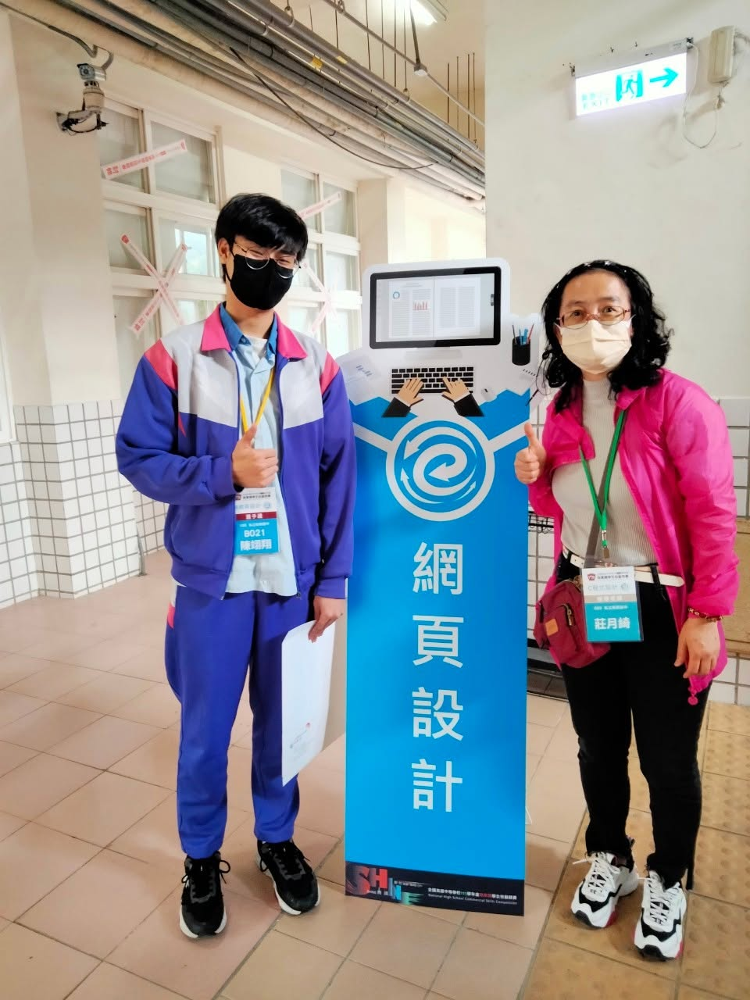

✳✦
IDEAS INTO ACTION ↗
✳ 你的未來，不只一種解答。
BUSINESS IS EVERYWHERE.
把好奇變成實力✳IDEA → PLAN → ACTION✳你的想法，值得上場✳BUSINESS IS
EVERYWHERE✳
認識新興商管群 / DISCOVER
商管，其實就在
你的每一天。
一杯飲料怎麼定價？一件商品怎麼跨海？
一筆資料能發現什麼？一個網站如何成交？
商業與管理群，把日常的好奇，
變成看懂世界、解決問題的能力。
好奇心 ?＋商業思維 ↗＋數位工具
⌘＝把想法做出來 ✦
從一個點子，到一筆訂單
四科探索 / FIND YOUR FIELD
新興商管・金手榮耀 / SHIN SHING HONORS111 學年度
全國高級中等學校商業類學生技藝競賽
讓專長，
讓專長，
寫成全國榮耀。
新興高中・資料處理科・料甲
陳翊翔同學
參加111學年度全國高級中等學校商業類學生技藝競賽，於網頁設計職種榮獲金手獎・全國第二名，為新興高中商管群寫下亮眼成績。

SHIN SHING HIGH SCHOOL
WEB DESIGN資料處理科｜陳翊翔｜金手獎全國第二名以專長，成就榮耀。
競賽年度111 學年度
參賽職種網頁設計
獲獎獎項金手獎
競賽名次全國第二名
從新興出發 / YOUR NEXT CHAPTER
今天的好奇，
是明天的起點。
四個科別，四種專長。
從新興商管出發，逐步累積自己的能力與作品。
01 / KEEP LEARNING
把興趣，學得更深。
依個人興趣與招生規定，探索企業管理、國際貿易、資訊管理、行銷與流通等相關升學領域。
02 / MAKE IT REAL
把能力，做成作品。
試著做一份營運企畫、整理一組商業數據，或打造一個商務網站，練習把學到的知識真正用出來。